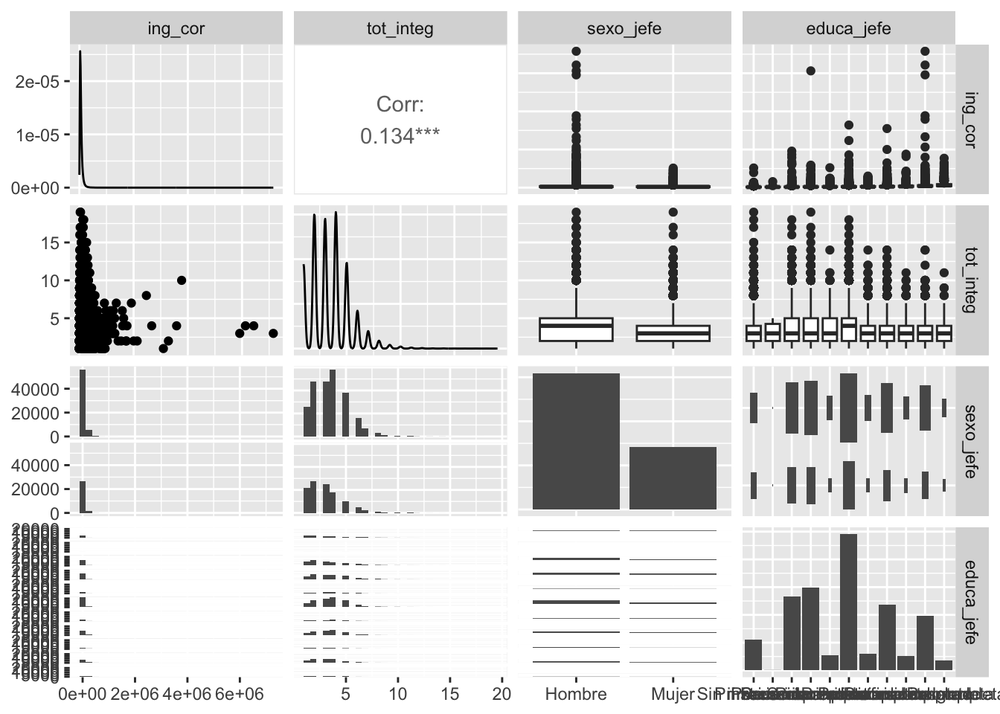

{ggplot2} es un sistema de trazado para R basado en la gramática de los gráficos. {GGally} extiende {ggplot2} agregando varias funciones para reducir la complejidad de combinar geoms con datos transformados. Algunas de estas funciones incluyen una matriz de gráficos por pares, una matriz de diagramas de dispersión, un gráfico de coordenadas paralelas, un gráfico de supervivencia y varias funciones para trazar redes.
`stat_bin()` using `bins = 30`. Pick better value with `binwidth`.
`stat_bin()` using `bins = 30`. Pick better value with `binwidth`.
`stat_bin()` using `bins = 30`. Pick better value with `binwidth`.
`stat_bin()` using `bins = 30`. Pick better value with `binwidth`.

concentradohogar %>% dplyr::mutate_at(vars(sexo_jefe,educa_jefe), ~as_label(.x)) %>% dplyr::select(ing_cor, gasto_mon, tot_integ, sexo_jefe) %>% GGally::ggpairs(columns =1:3, # las primeras tres van en la cuadrícula ggplot2::aes(color = sexo_jefe,fill = sexo_jefe, # aquí van coloresalpha =I(0.4))) # aquí la transparencia
7.4 Hipótesis e intervalos de confianza
7.4.1stats::t.test()
Este comando nos sirve para calcular diferentes tipos de test, que tienen como base la distribución t
\[H_o: \mu = \mu_0 \]\[H_{a1}: \mu ≠ \mu_0 \]
\[H_{a2}: \mu > \mu_0 \]\[H_{a3}: \mu < \mu_0 \]
Univariado para estimación
t.test(concentradohogar$ing_per)
One Sample t-test
data: concentradohogar$ing_per
t = 206.84, df = 90101, p-value < 2.2e-16
alternative hypothesis: true mean is not equal to 0
95 percent confidence interval:
21591.31 22004.41
sample estimates:
mean of x
21797.86
Univariado para hipótesis específica
t.test(concentradohogar$ing_per, mu=4105.11*3)
One Sample t-test
data: concentradohogar$ing_per
t = 89.98, df = 90101, p-value < 2.2e-16
alternative hypothesis: true mean is not equal to 12315.33
95 percent confidence interval:
21591.31 22004.41
sample estimates:
mean of x
21797.86
t.test(concentradohogar$ing_per, mu=4105.11*3, alternative ="two.sided") #default y de dos colas
One Sample t-test
data: concentradohogar$ing_per
t = 89.98, df = 90101, p-value < 2.2e-16
alternative hypothesis: true mean is not equal to 12315.33
95 percent confidence interval:
21591.31 22004.41
sample estimates:
mean of x
21797.86
t.test(concentradohogar$ing_per, mu=4105.11*3, alternative ="less") ## cola izquierda
One Sample t-test
data: concentradohogar$ing_per
t = 89.98, df = 90101, p-value = 1
alternative hypothesis: true mean is less than 12315.33
95 percent confidence interval:
-Inf 21971.21
sample estimates:
mean of x
21797.86
t.test(concentradohogar$ing_per, mu=4105.11*3, alternative ="greater") #cola derecha
One Sample t-test
data: concentradohogar$ing_per
t = 89.98, df = 90101, p-value < 2.2e-16
alternative hypothesis: true mean is greater than 12315.33
95 percent confidence interval:
21624.52 Inf
sample estimates:
mean of x
21797.86
7.4.2 Enchulando un poquito
Los resultados tienen la info, pero la podemos almacenar en un objeto. Con los cálculos de modelos es muy útil guardarlos para compararlos.
t.test0<-t.test(concentradohogar$ing_per, mu=4105.11*3, alternative ="less")
Veamos si lo imprimimos
t.test0
One Sample t-test
data: concentradohogar$ing_per
t = 89.98, df = 90101, p-value = 1
alternative hypothesis: true mean is less than 12315.33
95 percent confidence interval:
-Inf 21971.21
sample estimates:
mean of x
21797.86
broom::tidy(t.test0)
# A tibble: 1 × 8
estimate statistic p.value parameter conf.low conf.high method alternative
<dbl> <dbl> <dbl> <dbl> <dbl> <dbl> <chr> <chr>
1 21798. 90.0 1 90101 -Inf 21971. One Sampl… less
La función broom::tidy() hace que el resultado se vuelva un “tibble”, una tabla muy compatible con el tidyverse. Esto puede ser útil cuando queremos ir comparando estimaciones o exportarlas a Excel.
Anteriormente vimos con {stats} cómo hacer inferencia. El paquete {infer} tiene también elementos para inferencia, pero en formato más compatible con tidyverse.
concentradohogar %>%filter(tam_loc==1) %>%# para quedarnos solo con lo urbano infer::t_test( response = ing_per, mu =4105.11*3)
Como vemos nos da el mismo resultado anterior, pero nos da directamente el resultado en formato tidy.
7.4.3 Proporciones
Para una proporción en realidad el comando de base es muy sencillo, puesto que necesita
table(concentradohogar$sexo_jefe)
1 2
61905 28197
prop.test(table(concentradohogar$sexo_jefe))
1-sample proportions test with continuity correction
data: table(concentradohogar$sexo_jefe), null probability 0.5
X-squared = 12610, df = 1, p-value < 2.2e-16
alternative hypothesis: true p is not equal to 0.5
95 percent confidence interval:
0.6840135 0.6900799
sample estimates:
p
0.6870547
Ojo, R no utiliza el estadístico Z para las proporciones. ¿Qué usará?
7.5 Estimaciones bivariadas
7.5.1 Diferencias de medias por grupos
¿Podemos decir, con significancia estadística que los valores medios de una variable son diferentes entre los grupos?
Welch Two Sample t-test
data: ing_per by sexo_jefe
t = -0.49258, df = 75565, p-value = 0.6223
alternative hypothesis: true difference in means between group 1 and group 2 is not equal to 0
95 percent confidence interval:
-489.4237 292.8300
sample estimates:
mean in group 1 mean in group 2
21767.1 21865.4
Con {infer} sería:
concentradohogar %>%mutate(sexo_jefe=as_label(sexo_jefe)) %>% infer::t_test(ing_per ~ sexo_jefe, order =c("Hombre", "Mujer") )
Wilcoxon rank sum test with continuity correction
data: ing_per by sexo_jefe
W = 821831224, p-value < 2.2e-16
alternative hypothesis: true location shift is not equal to 0
7.6 Estimación de varianzas y sus pruebas de hipótesis
Para poder hacer inferencia sobre la varianza utilizamos el comando VarTest() del paquete {DescTools}
Guardar como objeto nuestros resultados, siempres muy conveniente para pedir después o para realizar operaciones con ellos
test2<-concentradohogar %>%filter(recibe_rem==1) %>%with(VarTest(ing_per))test2$conf.intsqrt(test2$conf.int) ### sacamos la raíz cuadrada para tener las#desviaciones estándar y sea más fácil de interpretar
Con tidy de “broom”
tidy(test2)
7.7 Estimación de diferencias de varianzas y sus pruebas de hipótesis
Para comparar varianza, usamos su “ratio”, esto nos da un estadístico de prueba F, para comparar dos muestras de poblaciones normales.
Si lo que queremos es comparar la varianza entre dos grupos, usamos el signo ~
F test to compare two variances
data: ing_per by as_label(sexo_jefe)
F = 2.0568, num df = 61904, denom df = 28196, p-value < 2.2e-16
alternative hypothesis: true ratio of variances is not equal to 1
95 percent confidence interval:
2.016164 2.098089
sample estimates:
ratio of variances
2.056796
7.8 Prueba chi-cuadrado chi-sq. Una aplicación más común
Cuando tenemos dos variables cualitativas o nominales podemos hacer esta la prueba chi-cuadrado, o prueba de independencia. Esta tiene una lógica un poco diferente a las pruebas que hacemos, porque proviene de comparar la distribución de los datos dado que no hay independencia entre las variables y los datos que tenemos.
La hipótesis nula postula una distribución de probabilidad totalmente especificada como el modelo matemático de la población que ha generado la muestra, por lo que si la rechazamos hemos encontrado evidencia estadística sobre la dependencia de las dos variables.